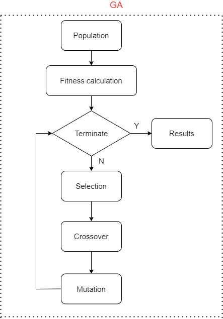
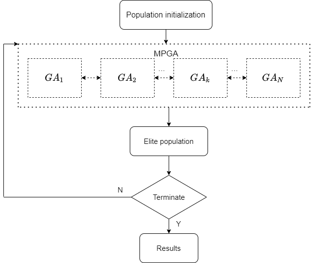
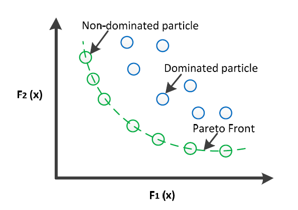
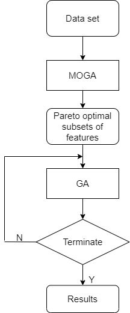

\documentclass{article}
\usepackage[utf8]{inputenc}
\usepackage{graphicx}
\usepackage{amsmath}
\usepackage{amsfonts}
\usepackage{amssymb}
\usepackage{bbm}
\usepackage{bbold}
\usepackage{enumitem}
\title{Improved genetic algorithms for feature selection}
\begin{thebibliography}{9}
\bibitem{1}
K. Deb, A. Pratap, S. Agarwal and T. Meyarivan, "A fast and elitist multiobjective genetic algorithm: NSGA-II," in IEEE Transactions on Evolutionary Computation, vol. 6, no. 2, pp. 182-197, April 2002, doi: 10.1109/4235.996017.
\bibitem{2}
Kumar, Mahesh & Nallagownden, Perumal & Elamvazuthi, Irraivan. (2016). Advanced Pareto Front Non-Dominated Sorting Multi-Objective Particle Swarm Optimization for Optimal Placement and Sizing of Distributed Generation. Energies. 9. 982. 10.3390/en9120982.
\bibitem{3}
Wang, Di & Zhang, Zuoquan & Bai, Rongquan & Mao, Yanan. (2017). A hybrid system with filter approach and multiple population genetic algorithm for feature selection in credit scoring. Journal of Computational and Applied Mathematics. 329. 10.1016/j.cam.2017.04.036.
\bibitem{4}
Ahuja, Jyoti & Ratnoo, Saroj. (2015). Feature Selection using Multi-objective Genetic Algorith m: A Hybrid Approach. INFOCOMP Journal of Computer Science. 14. 26-37. 10.18760/IC.14120153.
\bibitem{5}
Abdullah Konak and David W. Coit and Alice E. Smith. (2006). Multi-objective optimization using genetic algorithms: A tutorial. Reliability Engineering & System Safet. 91. 992-1007. https://doi.org/10.1016/j.ress.2005.11.018
\end{thebibliography}
\begin{document}
\maketitle
\section{GA}
\subsection{Chromosome Representation}
Each chromosome represents a feature subset. A chromosome is represented as a sequence of 0’s and 1’s. The bit value 1 represents the presence of a feature whereas 0 denotes its absence.
\subsection{Fitness Functions}
\begin{equation}
f() = \text{Predictive Accuracy of SVM}
\end{equation}
\subsection{Genetic Operators}
\begin{itemize}
\item Selection: Roulette wheel Selection has been used as selection operator.
\item Crossover: Single Point Crossover has been applied as the crossover operator.
\item Mutation: Use the simple bit flip mutation operator.
\end{itemize}
\subsection{GA}
The flowchart describes the GA in Fig \ref{fig:ga}.

\begin{center}
\caption{The genetic algorithm.}
\end{center}
\section{MPGA}
Premature convergence is a phenomenon that GA can’t neglect. All individuals of the population tend to be of the same status and stop evolution so the algorithm fails to find a satisfactory solution. So multiple population genetic algorithms can be used to replace the standard genetic algorithm to solve the problem.
MPGA utilizes multiple populations to optimize in parallel. Information exchange between different populations is through immigration operator, and it implements multiple population co-evolution. The optimal solution is generated by multiple population co-evolution. Different populations in MPGA are independent of each other, and they contact through immigration operator. Immigration operator is to introduce the best individual of each population into other populations regularly. It realizes the information exchange between populations. The operation rule is that the best individual in the source population instead of the worst individual in the target population. Flow chart of MPGA is as Fig \ref{fig:mpga}.

\begin{center}
\caption{The multiple population genetic algorithm.}
\end{center}
\section{MOGA}
\subsection{Multi-objective optimization (MOP)}
MOP can be expressed as follows:
\begin{equation}
min F(u) = [f_1(u), f_2(u), ..., f_{U_{obj}}(u)], u\in \mathbb{U}
\end{equation}
where $F(u)$ is the function of $u$ and $M_{obj}$ is the total number of objective functions. The $u$ and $\mathbb{U}$ are the decision variable and its space respectively.
\begin{enumerate}
\item Dominated
Let say $u_1$ is said to dominate $u_2$, if and only if, the following conditions are satisfied.
(1) \begin{equation}
\forall i \in \{1, 2, ..., M_{obj} \}: f_i(u_1) \leq f_i(u_2)
\end{equation}
(2) \begin{equation}
\exists j \in \{1, 2, ..., M_{obj} \}: f_j(u_1) < f_j(u_2)
\end{equation}
\item Non-dominated
A solution $u$ is said to be non-dominated or Pareto solution of set $\mathbb{S} = \{u_1, u_2, ..., u_k\}$, if $u\in \mathbb{S}$, and there is no solution $u'\in \mathbb{S}$ for which dominates $u$.
\item Pareto-optimal solution
Supposed that all the non-dominated solutions of set $\mathbb{S}$ are in set $\mathbb{P}$, then Pareto front of set is $\mathbb{S}$ is given as:
\begin{equation}
\mathbb{P} = \{\overrightarrow{\rm f} = [f_1(u_1), f_2(u_2), ..., f_{M_{obj}}(u)]^T, u\in \mathbb{S}\}
\end{equation}

\begin{center}
\caption{Dominated, non-dominated and Pareto-front solution set.}
\end{center}
\end{enumerate}
MOP gives rise to a set of optimal solutions (largely known as Pareto-optimal solutions), instead of a single optimal solution. In the absence of any further information, one of these Pareto-optimal solutions cannot be said to be better than the other. This demands to find as many Pareto-optimal solutions as possible.
\subsection{MOGA for feature selection}
There are proposals to find multiple Pareto-optimal solutions. The most referenced MOGA for the multi-objective optimization is NSGA
II. I applied it for MOGA in source code.
MOGA for feature selection problem is employed to find Pareto optimal subsets of features. Then, they are passed to the other GA. The GA converges very fast because its initial population contains highly relevant features and also because the redundant and noisy features have already been removed at the previous MOGA. Flow chart is shown as Fig \ref{fig:moga2}.

\begin{center}
\caption{The multi-Objective Genetic Algorithm.}
\end{center}
\begin{enumerate}
\item MOGA
\begin{equation}
\max F(.) = [f_1, f_2]
\end{equation}
where:
\begin{itemize}
\item
\begin{equation}
f_1 = \text{Predictive F1 of SVM}
\end{equation}
\item
\begin{equation}
f_2 = N - \text{Number of elements in the subset}
\end{equation}
\end{itemize}
\item GA
\begin{equation}
f_3 = \text{Predictive of accuracy of SVM}
\end{equation}
\end{enumerate}
\end{document}